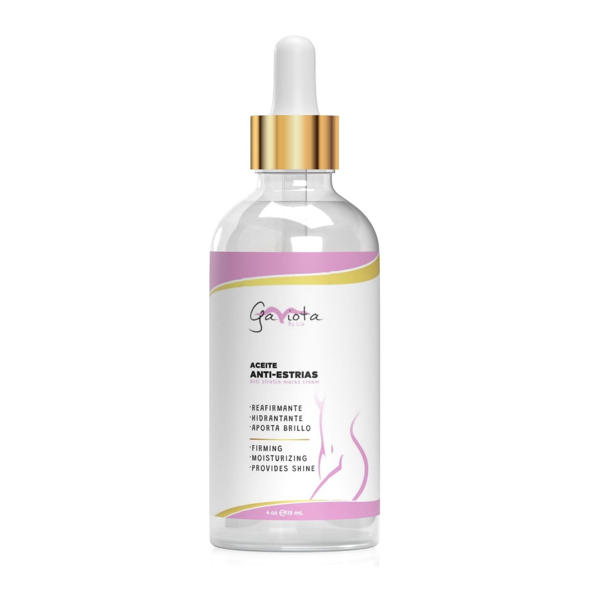
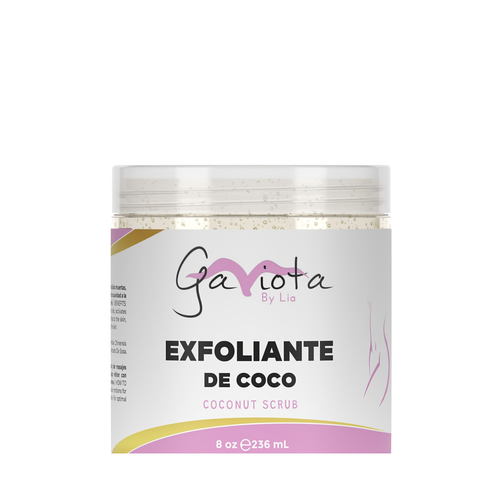
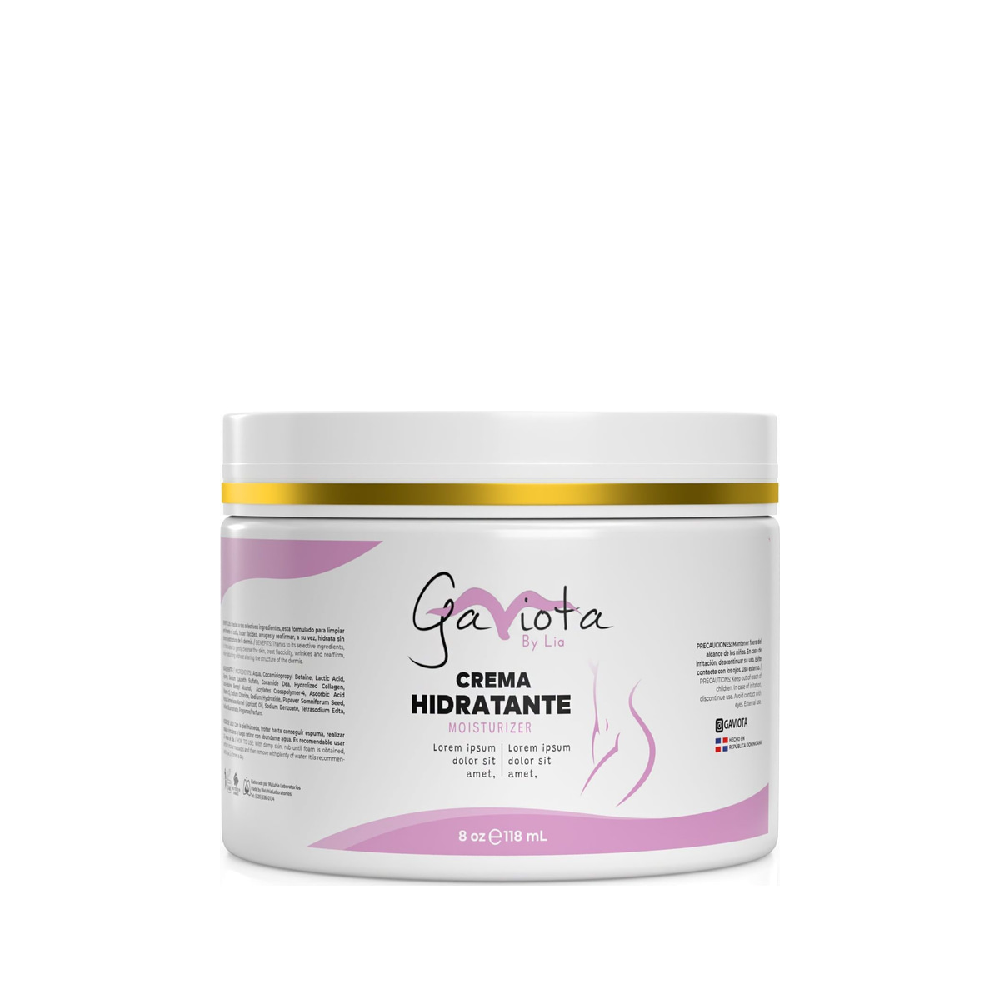
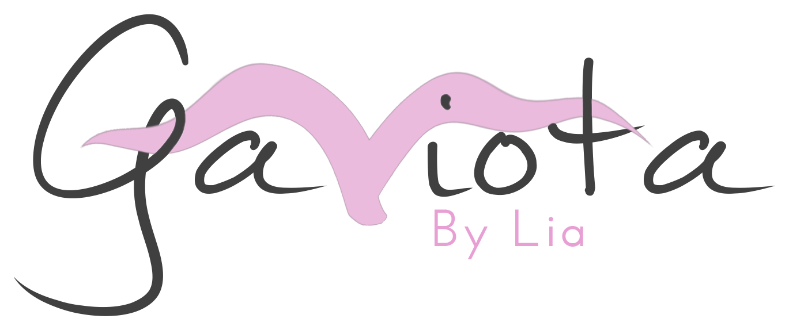

Cuidado corporal inspirado en la belleza dominicana
Tu piel.
Tu ritual.
Tu momento.
La colección

Anti-Estrías

de Coco

Hidratante
para Barba

Cuidado corporal
Aceite Anti-Estrías
$50.00 · 115 mL
Modo de uso
Aplicar en la zona deseada y masajear con movimientos circulares por unos minutos. Para óptimos resultados, aplicar después del baño, dos veces al día.
Añadir a la bolsa
Subtotal estimado$50.00
Envío estimado (EE. UU.)$14.00
Total estimado$64.00

Hecho en República Dominicana · Envíos en Estados Unidos
gaviotabylia.com